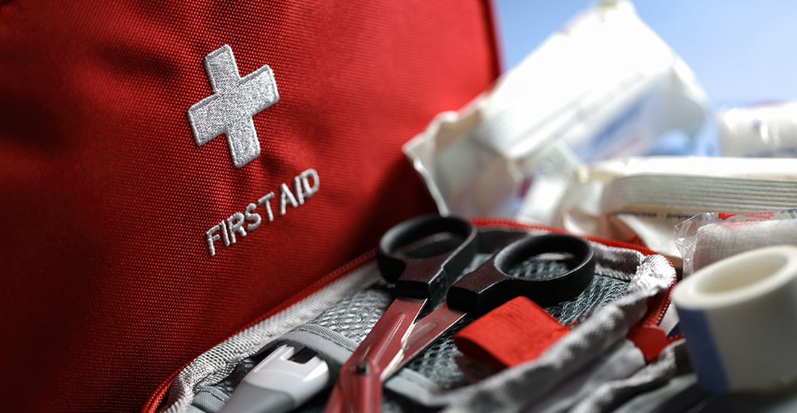

🧭 災難生存 · 實用小知識
🩹 關鍵時刻的基礎急救
戰時或大型災難中，救護車可能叫不到、也來不了。這時候，現場的人會不會止血、會不會壓胸，往往決定一個人能不能撐到專業救援。這篇整理最能救命、也最容易上手的幾個動作。但請記住一句話：看文章不能取代實作訓練——平時務必去上一堂正式的急救／CPR＋AED 課程。
⚠ 重要前提
本文為一般知識整理，不能取代專業醫療與正式急救訓練。緊急時第一步永遠是確認現場安全與設法求救（台灣119）。以下動作請盡量在受過訓練後、於真正必要時施行。

▲ 基礎急救包。圖片：美國 CDC，Wikimedia Commons，公有領域（美國聯邦政府作品）。
黃金順序：先安全，再求救，再處置
- 確認現場安全：別讓自己成為下一個傷者（火、電、倒塌、交通、槍砲）。
- 評估傷患：拍肩呼喚有無反應？有沒有正常呼吸？
- 求救：撥打 119（或請旁人撥打並取得 AED），說清楚地點、人數、傷勢。
- 依威脅優先處置：致命大出血 → 呼吸／心跳 → 其他傷害。
各類急症的「第一步」對照
| 情況 | 立即該做 | 絕對不要 |
|---|
| 大量出血 | 直接用力持續加壓；必要時上止血帶 | 一直掀開查看、移除已浸透的敷料 |
| 沒反應、沒呼吸 | 只壓胸 CPR＋盡快用 AED | 因怕壓斷肋骨而不敢壓 |
| 燒燙傷 | 沖、脫、泡、蓋、送 | 冰敷、塗牙膏醬油、弄破水泡 |
| 異物哽塞 | 能咳就鼓勵咳；不能呼吸做哈姆立克 | 盲目用手挖喉嚨 |
| 疑似骨折 | 固定患肢、避免移動、冰敷消腫 | 硬把變形的肢體「喬正」 |
1. 止住大出血——最優先的救命動作
成人失血過多可在數分鐘內致命，因此致命大出血的處置優先於一切。
- 直接加壓：用乾淨紗布或布料用力、持續壓住傷口，別一直放開查看。
- 浸透了怎麼辦：不要移除原本的敷料（會扯掉正在形成的血塊），直接再疊上去繼續壓。
- 止血帶：四肢無法以加壓控制的致命出血，才把止血帶綁在傷口近心端（靠軀幹側）、綁到血止住，並記錄上帶時間告知醫護，中途不要隨意鬆開。
- 抬高患肢、讓傷者平躺保暖，減緩休克。
2. 成人 CPR（只壓胸）與 AED
對沒有反應、沒有正常呼吸的成人，未受訓者做「只壓胸（Hands-Only）」CPR 即可，簡單又有效：
- 位置：胸部正中央（兩乳頭連線中點）。
- 用力壓：深度約 5 公分，每次讓胸廓完全回彈。
- 快速壓：速率 每分鐘 100–120 下（可跟著《Stayin' Alive》節奏）。
- 不要停：持續到專業人員接手、傷者恢復呼吸、或 AED 到場。
- AED：一到就開機，貼上電極片、依語音指示操作，它會自動判斷是否需要電擊。公共場所多設有 AED（心臟去顫器）。
3. 燒燙傷：沖、脫、泡、蓋、送
- 沖：以流動的常溫清水沖患部 15–20 分鐘。
- 脫：小心除去未沾黏的衣物飾品（沾黏處不要硬撕）。
- 泡：持續泡於冷水中降溫、減痛。
- 蓋：用乾淨（濕）布或不沾黏敷料覆蓋。
- 送：盡快送醫。切勿冰敷、塗牙膏醬油、弄破水泡。
4. 異物哽塞：哈姆立克法
若對方還能咳嗽或出聲，鼓勵他用力咳。若完全無法呼吸、發不出聲、抓喉嚨：站到背後，雙手環抱其腰部，一手握拳置於肚臍上方、胸骨下方，另一手包覆，快速向內、向上推擠，反覆直到異物排出。若對方失去意識，將他放平、開始 CPR。嬰兒則採「五次拍背＋五次壓胸」交替。
💡 平時就準備
- 去上一堂CPR＋AED 與基礎急救實作課（很多消防局、醫院、紅十字會有開）。
- 備妥急救包並定期檢查效期，放在固定、好拿的位置（見〈緊急避難包清單〉）。
- 把家人的血型、過敏、慢性病、常用藥寫在聯絡卡上。
5. 休克：容易被忽略的隱形殺手
大量失血、嚴重燒燙傷、劇烈疼痛或脫水都可能導致休克——身體血液循環不足、器官得不到足夠氧氣。症狀包括：臉色蒼白、皮膚濕冷、脈搏快而弱、呼吸急促、意識模糊、口渴。處置原則：
- 讓傷者平躺，若無下肢骨折或脊椎受傷，可將雙腳略微抬高，幫助血液回流。
- 保暖：蓋上毯子或衣物，減少體溫流失。
- 控制出血、安撫情緒、不要給予飲食（可能需要手術，或引發嘔吐嗆咳）。
- 持續觀察呼吸與意識，盡速就醫；若失去呼吸則開始 CPR。
6. 傷口包紮與骨折固定
- 一般傷口：先以清水沖洗異物，止血後用乾淨敷料覆蓋、以繃帶固定；注意是否有紅、腫、熱、化膿等感染跡象。
- 刺入異物（如玻璃、鋼筋）：不要拔除，在異物兩側墊高固定、避免移動，直接送醫——貿然拔除可能引發大出血。
- 疑似骨折：固定患肢於受傷姿勢、避免移動，可用夾板或雜誌、木條加繃帶固定，冰敷消腫，切勿硬把變形的肢體「喬正」。
- 頭部或脊椎受傷：如非立即危險，盡量不要移動傷者，穩住頭頸、等待專業救援。
7. 失溫與中暑
- 失溫（低體溫）：移到溫暖處、換掉濕衣、以毯子與體溫回溫、給溫熱（非酒精）飲品；嚴重者動作要輕柔並盡速就醫。
- 中暑：移到陰涼處、鬆開衣物、以濕毛巾與搧風降溫、補充水分與電解質；若意識不清、體溫極高，屬醫療急症須立即送醫。
8. 心理急救：戰時同樣重要
災難與戰爭造成的不只是身體傷害。面對驚嚇、失去或長期壓力，心理急救能穩住當事人：確保安全、傾聽而不逼問、滿足基本需求（水、保暖、資訊）、陪伴、協助與親友聯繫。對孩子要用簡單、誠實、安撫的語氣說明狀況，維持作息與陪伴感，能大幅降低長期創傷。也別忘了照顧施救者自己——連續處理傷患會帶來極大的身心負荷，適時輪替、休息與抒發，才能持續幫助別人。
💡 先保護自己，才能救人
施救前務必戴上手套（或以塑膠袋替代）避免血液體液接觸；現場若有火、電、倒塌、槍砲等危險，先確保自身安全再行動——你不能成為下一個需要被救的人。事後以肥皂徹底洗手。
常見問答 FAQ
Q1. 大量出血第一步？
直接、持續、用力加壓；浸透別掀開，直接再疊敷料續壓；四肢致命出血無法控制才上止血帶並記錄時間。
Q2. 沒受訓能做 CPR 嗎？
能。對無反應、無正常呼吸的成人做「只壓胸」CPR：胸部正中央、深約 5 公分、每分鐘 100–120 下，不停到 AED 或救護到場。
Q3. 燒燙傷可以冰敷或塗牙膏嗎？
不可以。用流動清水沖 15–20 分鐘（沖脫泡蓋送），不要冰敷、塗抹或弄破水泡。
Q4. 哽塞怎麼救？
能咳就鼓勵咳；完全不能呼吸就做哈姆立克（肚臍上方快速向內上推擠），失去意識則改 CPR。
Q5. 核生化情境的急救有何不同？
需先脫離污染源、去除污染（脫衣、沖洗）並做好自我防護後再施救，避免二次污染，詳見〈核／生／化威脅的基本防護觀念〉。
權威來源
※ 本文為一般急救知識整理，不能取代專業醫療與正式急救訓練。實際施救請以受訓所學與現場醫護指示為準；緊急時請先撥打 119。